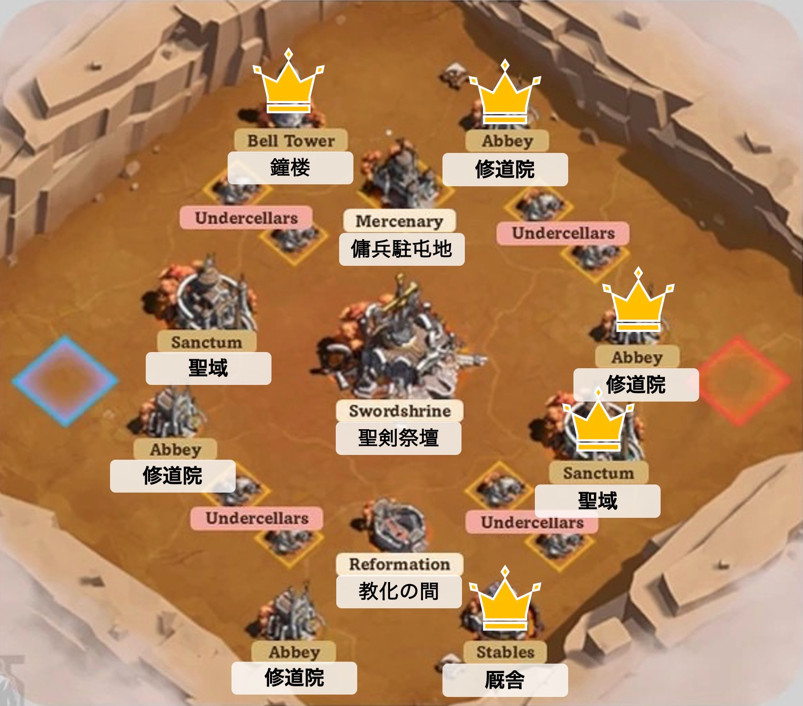
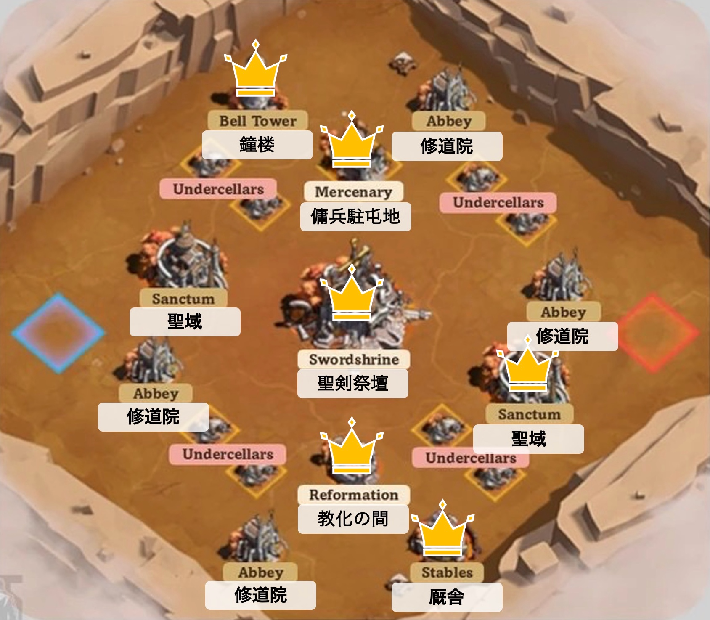

全体マップ

全体マップ
○基準値：毎分+600、初回占領+3,000(5分相当)
＊占領の所要時間：2分
○初期建築物
・聖域(左右2箇所)：基準値の2倍
・修道院(その他4箇所)：1倍
・厩舎(右下1箇所)：0.4%
┗テレポートクールダウン50%減（12分→6分）
・鐘楼(左上1箇所)：0.4%
┗占領時間50%減（2分→1分）
○途中解放建築物（残り時間45分解放）
・聖剣祭壇(中央1箇所)：基準値の3倍
・教化の間(中央下1箇所)：0.4倍
┗バフ：与ダメ15%増、被ダメ15%減
・傭兵駐屯地(中央上1箇所)：0.4倍
┗傭兵派遣：詳細不明
○初回ポイント
・初期建築物：8.8倍＝26,400
・途中解放建築物：3.8倍＝11,400
○毎分ポイント
・解放前：8.8倍=5,280
→鐘楼、厩舎、聖域1、修道院2で過半数
・解放後：12.6倍=7,560
→聖剣祭壇、鐘楼、厩舎、教化の間、傭兵駐屯地、聖域1で過半数
○優先度
・初手：聖域＞修道院=鐘楼>厩舎
・序盤：鐘楼>厩舎>聖域>修道院
・中盤（解放後）：聖剣祭壇>教化の間=鐘楼>厩舎=傭兵駐屯地＞聖域>修道院
・終盤：聖剣祭壇>聖域=教化の間=鐘楼>修道院＞厩舎=傭兵駐屯地
・同盟ポイントと個人ポイントが存在
┗同盟ポイント：同盟の勝敗に影響
┗個人ポイント：個人報酬のみに影響（勝敗に関係なし）
・ポイント入手方法
┗同盟：初回占領、占領時間経過、建築物奪取時に散らばった金、隠された採取地の4つ
┗個人ポイント：兵士撃破でも獲得可（詳細未調査）
・占領時間経過の毎分ポイントは秒換算で1秒ごとに加算
┗ex)+600/min→+10/sec
・占領して数分後（1, 2分程度？）、毎分ポイントの50%が争奪可能な状態で計上されるようになる
┗建築物の上に表示され、建築物奪取後に周囲に散らばるポイント
・ポイント計上タイミング：占領中加算→散らばった瞬間減少→拾った分増加
ex)600×5分の場合→3000ポイント計上済（うち1500が建築物上にも表示）→敵が占領で1500が周囲に散らばる（1500ポイント減少）→拾ったポイントはその場で計上
ということは、散らばった金を全て拾うと、占領時間分のポイントを相殺できる。
極論、50分以上放置したとしても、「最後に全ての建築物を奪う→全て拾う」が成立すればほぼ同じポイントになる
＊厳密には若干負ける（50%計上前の1, 2分のポイント＋採取分負ける）
→頻繁に奪う必要はない
・奪った時、拾ったポイントの2倍分負け分の軽減
・奪われた時、拾ったポイントの2倍分勝ち
→頻繁に奪うより、相手より多く拾えるタイミングで奪うのが重要
①初回占領ポイントの獲得
②毎分増加ポイント過半数をキープ（攻撃より防御優先）
③建築物を奪う際、奪われる際に人数を派遣→敵より多く拾う⭐️最重要⭐️
→これで理論上負けない！
拾いの徹底で、占領が互角でも勝ち！
作戦成功の鍵は、
・ささみさんが敵味方含め最強であること
・防衛隊長が燃やされないこと
・③の敵より多く拾うを実践し続けること
です！
⓪特別攻撃隊長
・序盤：敵の主力への都市攻撃で戦力を削ぐ
・中盤：敵の戦力を見つつ攻撃継続or王城防衛にシフト
・終盤：敵拠点の強襲or祭壇と聖域２つを守って逃げ切り
・その他：王城の初回報酬獲得、戦場退出の活用
①攻撃隊長
・移転支援担当を連れて、手薄な敵の建築物を奪取→散らばった金の回収
＊⭐️重要⭐️奪っても相手の方が多く拾える体制なら奪わない
＊手薄な拠点がなければ格下への都市攻撃だけ行う
②防衛隊長
・重要拠点に駐屯、防衛
・勝てない集結攻撃が来た場合：チャットで報告→着弾前に送還→⭐️重要⭐️散らばった金の回収→攻撃隊長に奪還依頼
③移転支援部隊
・⭐️最重要⭐️攻撃隊長が攻め落とした時、防衛隊長が攻め落とされた時に移転→敵より多く散らばった金を拾う
┗これが勝敗を分ける！！
・攻撃隊長がソロで攻め落とせない駐屯地に移転、集結に乗る
・都市攻撃が来たらデスルーラ→待機
┗その場で聖域に援軍
・主戦力が損耗したら、④へ
④隠密支援部隊
・防衛隊長の駐屯拠点から少し離れたところに潜伏
・防衛建築物に駐屯し、余った部隊を隠された採取地or防衛隊長の都市に送る
・都市攻撃が来たらデスルーラ→移転チャージ完了後同じ場所へ移動→駐屯
┗もしくは③にシフト
＊駐屯中は移転しない！
・ささみさん：⓪
・MARUKOさん：①→②聖剣祭壇
・ひびきさん：①→②傭兵駐屯地、(2軍：聖剣祭壇)
・BEYZUさん：②右上修道院→②教化の間、(2軍：聖剣祭壇)
・amgさん：②鐘楼、(傭兵駐屯地)
・Vaderさん：②自陣側の聖域、修道院
・iaruth：②厩舎、(教化の間)
・ししゃもさん：③or④
・もねふさん：初手④→③or④
・あぼネコさん：初手④→③or④
・やおいかんねさん：初手④→③or④
・ちぃ〜さん：初手④→③or④
・Baristaさん：初手④→④
・エスティマちゃんさん：初手④→④
・またたびさん：初手④→④
・ぶたまんさん：初手④→④
・桜流水さん：初手④→④
・cafe777さん：初手④→④
○初手：初回占領ポイント狙い
★初回占領ポイント＆継続占領狙い★
・防衛隊長→持ち場へ
・もねふさん→自陣側聖域、修道院
・あぼネコさん→鐘楼
・やおいかんねさん→厩舎
・ちぃ〜さん→自陣側聖域、修道院
・Baristaさん→鐘楼
・エスティマちゃんさん→厩舎
・またたびさん→自陣側聖域、修道院
・ぶたまんさん→自陣側聖域、修道院
・桜流水さん→鐘楼
・cafe777さん→厩舎
＊建築物から少しだけ距離を置いた場所に移転（内側推奨）
★初回占領ポイントのみ狙い★
・ささみさん→敵側聖域、修道院
・MARUKOさん→左下修道院
・BEYZUさん→右上修道院
＊ささみさん、MARUKOさんは占領が完了したら撤収
→防衛中の建築物を都市攻撃で援護
★待機★
・ひびきさん
・ししゃもさん
→劣勢なところに移転
┗どこも問題なければ、右上修道院
○序盤：防御重視
鐘楼>厩舎>聖域1>修道院1>修道院2の5つを守る！

・①攻撃隊長：条件が良ければ拠点を奪う。それ以外は格下への都市攻撃で防衛を援護。
＊攻撃する前にチャットで金拾い支援者を募ること！（最低1人）
・②防衛隊長：ひたすら防衛。取られる前に連絡→金を拾える体制は最低限整える！
・初手は全員④隠密支援部隊→金拾いが必要なタイミングで数人③移転支援部隊に移行
○中盤（聖剣祭壇解放後）：初回占領ポイント＆防衛重視
聖剣祭壇>教化の間=鐘楼>厩舎=傭兵駐屯地＞聖域1の6つを守る！
修道院は放棄！

★初回占領ポイント狙い★
・ささみさん→聖剣祭壇
・MARUKOさん→聖剣祭壇
・BEYZUさん→教化の間
・ひびきさん→傭兵駐屯地
・④隠密支援部隊
┗修道院防衛メンバー：放棄→移転して教化の間>傭兵駐屯地＞聖剣祭壇の防衛に移行
┗鐘楼：傭兵駐屯地に２軍派遣
┗厩舎：教化の間に２軍派遣
┗聖域：聖剣祭壇に２軍派遣
＊デスルーラ後は２拠点の中間に移転
○終盤：
★基本パターン★
・ささみさん：敵建造物を蹂躙（都市でなく建造物狙い）
・ししゃもさん：ささみさんに追従し、金拾い
→拾ったら移転し、ゲリラ戦で敵のポイントを削ぐ
★ポイント圧倒的優勢の場合★
・聖剣祭壇、聖域2箇所に戦力を集中し、その他を放棄
┗ただし取らせて金を拾ってから移転
・ささみさんは３箇所に兵を送り防御
→この3箇所を奪われなければ逃げ切り勝ち
その他メンバー：防衛継続
①チャット、ラベル確認：聖剣用チャットとラベルを見て、支援が必要な場所を見極める！
②金拾いが最重要：周囲に金が散らばったらすぐに拾う！⭐️何よりも優先⭐️
③強行軍の利用：無料アイテム支給（初期5個、3分で+1個、max10個）を積極的に使用！
④戦場退出：戦闘不能になったら退出で全回復！！→12分後再入場可能
＊退出時は一声かけてください
⑤デスルーラ：都市攻撃が来たらどこでもいいから兵を派遣→兵の損耗なしで初期位置に戻れる
＊防衛隊長は禁止！
⑥防衛隊長を防衛：部隊が余ったら防衛隊長の都市に援軍
⑦都市移転の場所：
・隠密支援→内側に少し離れた見つかりにくい場所（都市攻撃を受けにくい）
・移転支援→建築物を囲むようにバラけると効率的に金を拾える